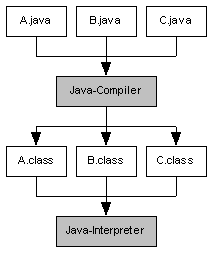
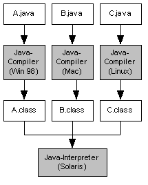

14.3.1 Schematische Darstellung
Der Turn-around-Zyklus beim Entwickeln von Java-Programmen unterscheidet
sich in mehrfacher Hinsicht von dem in traditionellen kompilierten
Programmiersprachen.
- Der Compiler erzeugt keine direkt ausführbaren Programme,
sondern .class-Files,
die von einem Java-Interpreter ausgeführt werden. Mittlerweile
arbeiten bereits mehrere Betriebssystemhersteller daran, .class-Files
direkt ausführbar zu machen, und es gibt schon Prozessoren, die
den Maschinencode in .class-Files ohne
zwischengeschalteten Interpreter verstehen.
- Es gibt keinen expliziten Link-Lauf, denn die verschiedenen .class-Files
werden zur Ausführungszeit gebunden.
- Die .class-Files eines einzigen Projekts
können auf unterschiedlichen Plattformen mit unterschiedlichen
Compilern erzeugt werden.
- Die .class-Files lassen sich auf
allen Plattformen ausführen, die einen Java-Interpreter besitzen;
unabhängig davon, wo sie ursprünglich entwickelt wurden.
Abbildung 14.1 zeigt
den schematischen Ablauf bei der Entwicklung eines Java-Programms,
das aus den Klassen A, B
und C besteht.

Abbildung 14.1: Der Entwicklungszyklus in Java
Da der Java-Bytecode plattformunabhängig
ist, hätten die Klassen A,
B und C
aber auch ebenso gut von verschiedenen Entwicklern auf drei unterschiedlichen
Plattformen entwickelt werden können, um später auf einer
vierten Plattform ausgeführt zu werden. Abbildung 14.2
zeigt dies beispielhaft.

Abbildung 14.2: Plattformübergreifende Entwicklung in Java
Getrenntes Kompilieren
Wie die Abbildungen deutlich machen, spielen die .class-Files
für den Entwicklungsprozess
und die Portierbarkeit von Java-Programmen eine entscheidende Rolle.
Jede .class-Datei enthält den Bytecode
für eine übersetzte Klasse. Zusätzlich sind in ihr
Informationen enthalten, um dynamisches Linken und Late-Bindung zu
unterstützen und gegebenenfalls Symbole, Zeilennummern und andere
Informationen für den Debugger zur Verfügung zu stellen.
Wie bereits angedeutet, dürfen tatsächlich auch zwei oder
mehr Klassen in einer Quelldatei enthalten sein. Voraussetzung dafür
ist allerdings, dass höchstens eine von ihnen als public
deklariert wurde. Eine solche Vorgehensweise kann beispielsweise bei
sehr kleinen Projekten, die nur aus ganz wenigen Klassen bestehen,
sinnvoll sein, um alle Klassen in eine einzige Datei zu bekommen.
Sie kann auch angewendet werden, wenn kleine Hilfsklassen benötigt
werden, die nur für eine einzige andere Klasse von Bedeutung
sind. Der Compiler erzeugt in jedem Fall eine separate .class-Datei
für jede Klasse, die in einer Quelldatei enthalten ist. Wurde
in einer Quelldatei mehr als eine Klasse public
deklariert, gibt es einen Compiler-Fehler.
Interessanterweise bietet Java volle Typsicherheit
auch über die Grenzen von Quelldateien hinweg, ohne dass dazu
Header-Dateien oder andere Interface-Beschreibungen nötig wären.
Der Compiler verwendet während der Übersetzung einer Java-Klasse
die .class-Dateien aller eingebundenen
Klassen und entnimmt diesen die Signatur der aufgerufenen Methoden.
Die Notwendigkeit zur Bereitstellung von separaten Header-Dateien
(wie beispielsweise in C++) und das fehlerträchtige Management
der Abhängigkeiten zwischen ihnen und ihren Quelltexten entfällt
daher.
Java und ant
Das Open-Source-Projekt ant,
ein komplett in Java geschriebenes Buildtool, ermöglicht es Ihnen,
Zusammenhänge und Abhängigkeiten auf der Ebene oberhalb
der Java-Programme abzubilden. Häufig gehören zu einem lauffähigen
Programm mehr als die übersetzten class-Dateien.
Bilder, Texte und Konfigurationsdateien, also Dateien, über die
der Java-Compiler kein Wissen über die Abhängigkeiten besitzt,
können mit Hilfe von ant
bequem in den Build-Prozess eingebunden werden.
ant
bietet weitere, umfangreiche Scripting-Möglichkeiten. Es kann
daher als Weiterentwicklung von make
angesehen werden. Basierend auf XML als Steuerungssprache bietet es
eine Vielzahl von eingebauten Kommandos, die beim Übersetzen
von Java-Programmen und während des gesamten Build-Prozesses
nützlich sind. Eigene Erweiterungen können in Java geschrieben
und nahtlos integriert werden. ant
wird als Jakarta-Projekt entwickelt,
seine Homepage ist http://ant.apache.org/.